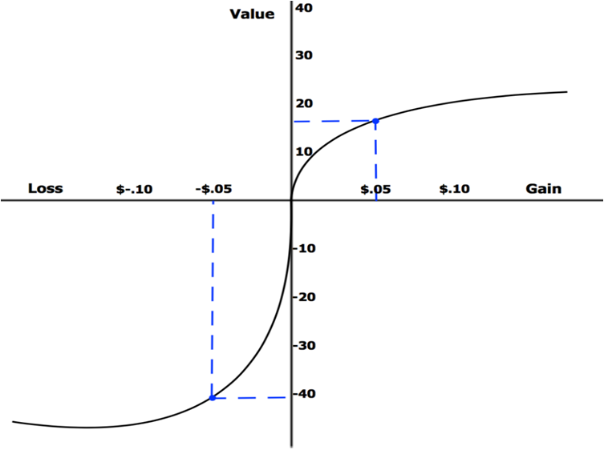
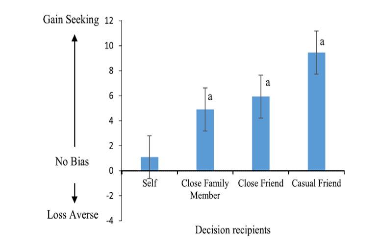
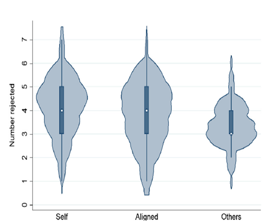
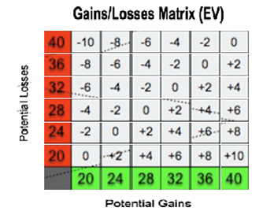
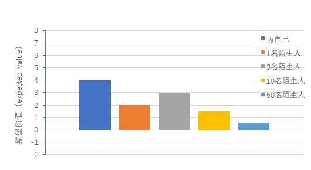

实验介绍
实验背景
理性思考往往是我们追求的良好决策方式，不过事与愿违，人们在进行决策的时候，影响我们行为的不仅仅是最终选择的结果，还有很大一部分原因是这些选择潜在的心理变化，而这些心理变化的权重对于人类而言是不同的。1759 年，现代经济学之父 Adam Smith 在他的《道德情操论》中描述了一个现象：状况由好变坏时，人们所承受的痛苦要比由坏变好时所体验到的欢乐多。他认为这种现象在人类行为中具有普遍性。200 多年之后，也就是 1979 年，Kahneman 和 Tversky（1979）用实验证实了这一观点：损失和获益的心理效用不相同，损失比等量获益产生的心理效用更大，并把这种现象命名为损失规避（loss aversion）。定义化的语言就是人们普遍倾向于规避可能带来损失的选择，尽管这种选择伴随着同等的甚至更多的收益。边是Kahneman 和 Tversky1984年描绘的心理效用与损失和收益的关系，在收益区域是正面效用的凸函数，在损失区域是负面心理效用的凹函数，也就是随着损失和收益的不断增加，伴随的心理效用也增加，刚开始增加得很快，后面比较平缓。另外损失区域的曲率会比获益区域大大概一倍，就是潜在损失的负面心理效用比潜在收益的正面心理效用要大一倍。

损失规避与进化的过程是相适应的，因为过高的估计损失有助于人们在潜在的危险环境中生存。大量研究证实了损失规避这种现象的普遍性。研究者在多种情境下发现了损失规避现象，除了最常见的金钱、巧克力。咖啡杯、油画等物品，也包括一些价值难以用金钱衡量的物品，如大学篮球比赛门票、赠品证明书、彩票等。还有研究表明，即使人们没有真实地拥有物品，仅通过情景想象也会有损失规避的存在。损失规避对众多领域都有重要的价值，它可以解释和预测有悖于规范化理论的许多现象，例如决策领域的禀赋效应Endowment effect，经济学领域品牌忠诚度，拍卖中赢者的诅咒，金融领域股权溢价之谜，还有政治领域与政策相关的诸多现象。关于损失规避的解释主要分为两类，第一是情感视角的因素，人们可能高估了损失带来的负性情感反应，即损失规避是过于重视损失效用而导致情感预测的错误，另外对物品的损失规避，例如禀赋效应中也发现，拥有物品的时间越长，情感依恋也就越强，禀赋效应也增加。第二个影响因素是从认知的视角来分析的，这类解释认为人们会对物品的属性不同的认知会对损失规避由所影响，损失是否能被替代，交易的目标，情绪，认知的文化差异等都会影响认知，进而影响损失规避。
人们已有许多文献证明个体为他人做决策时损失规避相比于为自己做决策会有明显的降低，去年的一项研究发现，个体为与自己不同亲疏关系（自己，家庭成员，亲近的朋友，普通朋友）决策时损失规避随亲疏关系增加而降低，这个实验从生活的七个方面（例如身体健康安全）测量被试愿意得到钱增加30%负面可能，或是愿意支付钱降低30%负面可能的程度，例如愿意得到0~1000美元增加30%罹患某种病的可能，或是支付0~1000美元减少30%罹患某种疾病的可能，然后两者做差，得分为0表示个人增加损失可能性而获得的金额与为避免损失所支付的金额相同;分数越低，越倾向于避免损失。如图：结果显示为自己决策时损失规避显著高于其他三组，交互作用的分析发现普通朋友和家人，亲密朋友间差异显著，而家人和亲密朋友间差异不显著。不过主要的是，在这个实验中个体为他人（家庭成员，普通朋友，亲密朋友）做决策时都是与自己没有利益关系的，按照卡尼曼的双过程模型理论（dual-process model） ，即决策是由情绪(affective/hot) &认知(deliberative/cold)双过程驱动的，损失规避的降低可能是由于人们为他人决策时减少了情感的参与，换言之潜在损失带来的负面效用没有为自己决策时那么大。而且这种变化随着与自己关系的疏远而增加，因此深思熟虑的认知在决策中更为主导。即为他人决策时会减少情感驱动，表现得更“cold”反而得到更理性的决策。

同样也是去年的一项研究，实验设计了自己为自己本身，为aligned（自己与实验中任意一人组成的组合），为随机一人风险博弈决策时损失规避的程度，实验中被试被要求接受或拒绝一系列的硬币博弈游戏，硬币为背面损失统一为6美元，正面的获益则从2美元到7美元，被试拒绝的数量代表了损失规避的程度，拒绝数量越多表示损失规避程度越高。实验中被试的报酬会抽取三种不同的决策博弈结果，以加强被试对博弈后果的考虑。如图：结果显示被试为他人决策时相比于自己损失规避有明显的降低。而自己为aligned决策时,损失规避程度与为自己决策时没有区别。这里与自己组合的另一个人与自己没有任何其他关系，不存在之前的家人甚至朋友关系。但由于风险决策包含了决策者在内，个体的决策与自己仍然存在利益关系，在双模型理论当中，个体的决策仍然倾向于情感驱动，个体依然会多关注潜在损失的负面效用，而当个体为他人做决策时，损失对于个体就不再那么突出，就与之前的实验一样表现出较低的损失规避。

实验设计和统计分析方法
期望价值（Expected value）可以用来衡量被试对不同博弈情形的偏好程度，即EV== 0.5G + 0.5L， G代表潜在收益gains ，L代表潜在损失losses。被试接受低EV的博弈游戏频率越高代表被试更倾向于选择高风险的博弈行为。
实验通过设计一系列EV的博弈情形，每个被试在为自己，为一个陌生人，为三个陌生人，为十个陌生人，为五十个陌生人五种条件下分别做20次博弈决策的游戏。通过对每一种条件下的20个数据进行bootstrap analysis（重采样分析）生成500个新的样本以扩大样本容量，生成不同EV下接受赌博概率的数据分布，通过观察接受概率P=0.5时对应的EV大小达到量化损失规避的作用，P=0.5时对应的EV大于0说明损失规避存在，小于则说明被试存在风险偏好，而EV的大小可以量化衡量损失规避程度的大小，从而分析五种条件下损失规避的差异情况。

预期结果
实验设计了一系列不同EV博弈情形，每个被试在为自己，为一个陌生人，为三个陌生人，为十个陌生人，为五十个陌生人五种条件下分别做了20次博弈决策游戏，由于已有文献说明人们对于自己有着普遍的损失规避，对他人损失规避行为想比于自己会有所降低，而随着群组的形成，人们会考虑到同情，责任而增加损失规避的行为（相比于对一个陌生人而言），而随着群组人数的不断增加，由于共同承担风险的人数增加，人们会相对地选择理性的决策，从减少损失规避的行为。由此可以预期，接受概率P=0.5水平之下预期价值EV大小如下图：
